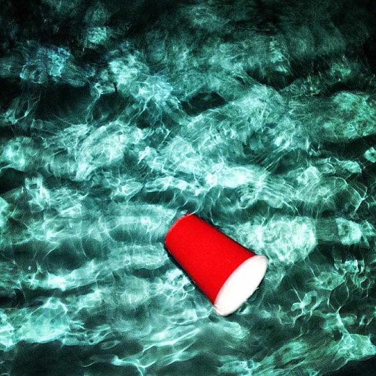

Whether your red solo cup is half empty or half full, it's lonelyredsolocup.
Parties are good. Littering is bad. Abandoning your champion of the evening's festivities, LRSC, is downright disgraceful. But it happens and is documented. These tales are the of brief follies experienced by the world's most prolific and most solitary partier, the Lonely Red Solo Cup.